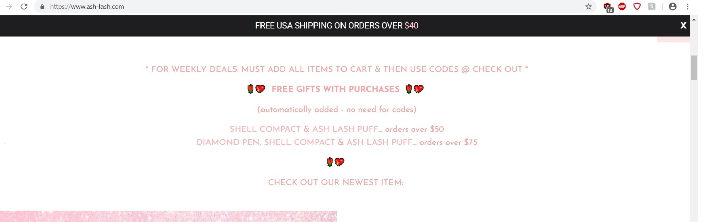

The website I chose for this for this usability analysis is https://www.ash-lash.com/. It is a an accessory site I visit often and while the overall usability isn’t bad, the front page design can get confusing
The navigation of the search criteria and breakdown of the search
Are the navigation elements clear?
Off the bat I can tell that this is a bootstrap design just from the top banner and the way the layout look on each page. The top menu bar makes it clear for navigating through what you are shopping for and is divided by the different types of accessories they sell. When placing the cursor over each link that will take you to an accessory page it gets highlighted in pink which I love because it shows that the cursor and link are working.
The front page has a few things I would make different. Underneath the photo gallery slide is some text that I usually scroll right past because it isn’t bold or big enough to see. Problem is this is where the promo codes and other news for sales on the site are. I have to remember when I go on the site to keep this in mind. To a first time shopper on the site they would miss out on the deals or other news on the products very easily.
Is content presented with clear hierarchies?
When it comes to the menu, yes, it presented with clear hierarchy especially with the highlighted links when moving the cursor over them at the top navigation bar. Once you scroll further down you see some their lash lines and sunglasses broken down by themes. This is where the hierarchies become unclear. You may see a scroll gallery with a few of their lashes promoting a certain aesthetic; however it is deceiving because it doesn’t show them all. It also isn’t very clear that you would need to click on the hierarchy to know there are more so it feels that the navigation bar is completely separate from these. One reason for this is because some of the titles for these are a link and some aren’t. These should be highlighted when running the cursor over them like the navigation bar.

Do I know what I'm looking at on each page?
When clicking on the links to each separate accessory category, yes, it is very easy to know where you are, what to be looking for and how to leave. When on the front page, I think there is too much to look at with links here and there, but not consistent so you don’t know if you are looking at products or just some photos that promote a look or aesthetic of their products. The photos that are all over the place can be distracting as well because they can vary in size and don’t necessarily have a flow at times. I think what would improve this is to have the aesthetics and information of each product divided within their own links of each accessory. For example the eye lashes can be divided by old Hollywood, romantic, etc within the eyelash page and not the front page.
Can I see there is more content if I scroll down?
Yes, I think you definitely can within all the pages and hierarchies within the site. This is definitely made clear since the content follows up so clearly. I have complaints when making sure that the page has more that the eye can see so in that aspect is it designed very well.